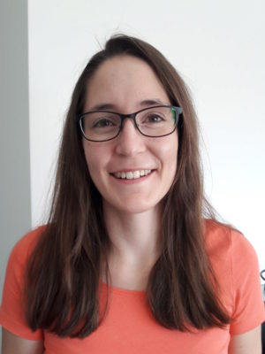
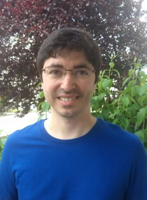

People

|
Mark D Robinson |
|
Twitter @markrobinsonca GitHub markrobinsonuzh Google Scholar |
|
| My research interests are diverse, but more-or-less encompass the general application of statistical methods and data science to experimental data with biological applications. Often, this is within the context of genomics data types, but we are interested in methodological challenges and robust solutions in data, generally. We also try to be modern scientists, with a focus on reproducibility (repos for code) and open science (preprints). | |
|
PhD in Medical Biology (2008), University of Melbourne (Walter and Eliza Hall Institute) MSc in Statistics (2001), University of British Columbia BSc in Applied Mathematics and Statistics (1999), University of Guelph |

|
Simone Tiberi |
|
Website Twitter @tiberi_simone GitHub SimoneTiberi Google Scholar |
|
| I am a Postdoc working on the development of cutting-edge statistical methods in bioinformatics, mostly for bulk and single-cell RNA-seq data.Previously, I was a PhD student at the Department of Statistics at the University of Warwick, where I worked on stochastic Bayesian hierarchical models to investigate transcription in single cells.In general terms, my interests are broad and lie in the development of statistical methods for applications in biology. | |
|
PhD in Statistics (2017), The University of Warwick MSc in Statistics (2012), The University of Padua BSc in Statistics (2010), Sapienza University of Rome |
| Izaskun Mallona | |
|
Website Google Scholar |
|
| I am mainly interested in gene expression modulation, as it lays the ground for any cell fate. The questions which excite my curiosity the most are: How are gene expression programs coded? and maintained? how do they adapt during development? and disease? To mine the regulation metastructure genome-wide I’m fond of integrating gene expression and epigenomic data, and to develop methods for doing so. | |
|
BSc in Computer Engineering (2014), Open University of Catalonia PhD (2012), Technical University of Cartagena MSc in Agriculture Engineering (2008), Technical University of Cartagena MSc in Biology (2007), University of Murcia |

|
Pierre-Luc Germain |
|
GitHub plger Google Scholar |
|
| I gradually shifted from the humanities to bioinformatics towards the end of my PhD, worked a lot in the past on linking chromatin alterations to gene expression, and currently work mostly on the analysis of short RNA-seq and single-cell RNA-seq, as well as pre- and post-transcriptional regulation of gene expression especially in the context of neurodevelopment. I have a shared position with the ETH’s D-HEST Institute for Neurosciences. | |
|
PhD in Philosophy of science (2014), SEMM and University of Milan MA in Philosophy (2009), University of Montreal BA in Philosophy (2007) |
| Imran Fanaswala | |
|
Twitter @IFanaswala |
|
| Imran Fanaswala has worked in academia and industry for over a decade; his passion lies in value-driven research (i.e. addressing unmet needs through research as well as bringing ideas to market). His work has spanned various fields (robotics, phylogenetics, DNA-assembly, neuroscience) but often within the machine-learning/AI context (and more recently, “ModelOps”). He strives for readable code, succint prose, and meaningful research. | |
|
MSc in Computational Biology (2014), ETH Zürich (thesis at RIKEN) BSc in Computer Science (2006), American University of Sharjah |
|  | Katharina Hembach |
| I have a background in bioinformatics and I am a shared PhD student with the Polymenidou lab. They focus on understanding the molecular mechanisms of neurodegenerative diseases such as Amyotrophic Lateral Sclerosis (ALS) and Frontotemporal Lobar Degeneration (FTLD). I help with the analysis and interpretation of different sequencing data, such as RNA-seq, CLIP-seq, and iCLIP. My main project is the development of a pipeline for the identification and quantification of alternative splicing events, specifically microexons and cryptic exons, from RNA-seq data. | |
|
MSc in Bioinformatics (2015), LMU and TU Munich BSc in Bioinformatics (2012), LMU and TU Munich |

|
Stephan Schmeing |
|
Twitter @StephanSchmeing GitHub schmeing |
|
| As a PhD student coming from a particle physics background I am currently working on a more realistic Illumina sequence simulator called ReSequenceR. It is able to create a profile from a bam file that is then used to simulate paired-read fastq files. Furthermore I will work on an assembly and population genomics of the Indo-Pacific bottlenose dolphin (tursiops aduncus). | |
|
MSc in Astro, Particle and Nuclear physics (2014), TU Munich BSc in Physics (2011), TU Munich |
|  | Vladimir Barbosa C. de Souza |
| I am a PhD candidate in Bioinformatics, and I am working with PacBio data (third-generation sequencing). As there is just few documentation about the data, one of the focus of my research is to figure out their features, mainly about quality scores. At the moment I am working on a project to develop a new fast and accurate method to create CCS reads (circular consensus sequences). | |
|
MSc in Applied Statistics (2015), University of Vicosa BSc in Biology, specialization Genetics (2013), University of Vicosa |

|
Stefan Milosavljevic |
|
LinkedIn GitHub supermaxiste |
|
| I have a shared PhD position with the Shimizu lab. I’ve got a background in biology and bioinformatics and I’m currently working on the rapid evolution of a plant species called Arabidopsis kamchatica. My project focuses on epigenetic modifications over short timescales and my general aim is to assess the impact and the importance of DNA methylation in evolution over short periods (rapid evolution). | |
|
MSc in Computational Biology and Bioinformatics (2017), ETH Zürich and University of Zürich BSc in Biology (2015), Université de Lausanne |

|
Helena Lucia Crowell |
|
Twitter @CrowellHL |
|
| In collaboration with the Bodenmiller lab lab, I have worked on correcting for spillover in CyTOF data. The preprint to this project is available on bioRxiv and has been published in cell systems. Alongside our compensation approach, I have made Finck et al.’s bead-based normalization and Zunder et al.’s single-cell deconvolution available in CATALYST (Cytometry dATa anALYSis Tools): a Bioconductor package providing tools for preprocessing and analysis of cytometry data; and have further integrated M. Nowicka’s CyTOF workflow for differential analysis into the package. As a PhD student, I am currently working on extending this framework for differential discovery to scRNA-seq data with complex experimental designs. | |
|
MSc in Computational Biology & Bioinformatics (2018), ETH Zürich BSc in Biochemistry (2015), University of Heidelberg |
| Almut Lütge | |
| I’m a PhD student with a background in Molecular Biotechnology, but already during my master I focused on Bioinformatics. I’m interested in all kinds of genomic analysis, but mainly worked with transcriptomic data, so far. My PhD project is about methods in single cell RNAseq and part of a Sinergia collaboration on defining the identity and differentiation pathways of the immune-stimulating fibroblastic tumor stroma. | |
|
MSc in Molecular Biotechnology (2018), University of Heidelberg BSc Molecular Biotechnology (2013), University of Heidelberg |
| Anthony Sonrel | |
|
LinkedIn |
|
| I am a PhD student that joined the Robinson Lab as part of the Life Science Zürich Graduate School. Through my past projects in academia and industry I worked on various topics such as NGS, GWAS summary statistics, epigenetic analyses (ChIP/ATAC-seq) and deep neural networks. In my current project, I’m evaluating and developing tools (mainly R packages) for single-cell RNA sequencing datasets. More specifically, I’m interested in developing new methodologies and new effective tools. | |
|
MSc in Molecular Life Sciences - Bioinformatics (2018), University of Lausanne BSc of Science in Biology (2015), University of Lausanne |

|
Reto Gerber |
| I am a Research Assistant in the Robinson lab. In my lastest project I developed a method for differential abundance analysis in cytometry where a covariate is subject to censoring (Preprint on bioRxiv). Currently I develop a R shiny web app helping in exploration and visualization of open access publication profiles of individual authors. In past projects I worked among other things on docking of biomolecules and signalling networks in cells, before turning more to the statistical aspect of bioinformatics. | |
|
MSc of Science in Computational Biology and Bioinformatics (2020), ETH, University of Zürich BSc of Science in Biology (2017), University of Zürich |

|
Elyas Heidari |
| I am a Master student of Computational Biology & Bioinformatics at ETH university. I am interested in developing analysis pipelines for single-cell multi-omics data. Currently, I am exploring single-cell B/T-cell receptor data to understand the diversity in immune repertoire and phenotypes. Prior to joining Robinson lab, I worked on developing a number of machine/deep learning tools for biomedical data. I have developed MUVIS for general medical data analysis and SeqLearner for semi-supervised learning on protein sequences. | |
|
BSc of Science in Applied Mathematics (2019), Sharif University of Technology BSc of Science in Computer Engineering (2019), Sharif University of Technology |

|
Emanuel Sonder |
| As a Master student in the Computational Biology and Bioinformatics joint program of ETH and UZH, I am currently working on my master thesis. The project is about the integration of multi-omics single-cell data to describe patterns of epigenetic heterogeneity, such as partially methylated domains (PMDs) and their influence on gene expression. In previous projects I have worked on different topics, amongst others, on a pan-cancer analysis of somatic mutations and DNA methylation alterations in the epigenetic machinery. I have a broad interest in the integration and statistical analysis of (single cell) data from different biological modalities. | |
| BSc in Biology (2018), ETH Zürich |

|
Joël Meili |
|
GitHub joelmeili |
|
| I am a master’s student in the Biostatistics program at UZH. Currently I am working on my master’s thesis which aims to propose a novel method that compares RNA velocities to identify cell clusters and genes within the clusters with different RNA velocities. The main aim is to compare experimental conditions (e.g. healthy vs. disease). However, the framework shoud also allow for comparisions of cell clusters from individual samples (e.g. B cells vs. T cells). | |
| BSc in Engineering and Management (2019), Zurich University of Applied Sciences |

|
Ahmad Al Ajami |
|
LinkedIn |
|
| I am a master’s student in the Computational Biology and Bioinformatics joint program of ETHZ and UZH. I am currently working on my master’s thesis where I am continuing work that I conducted during my internship at Roche. The project is about implementation and extension of existing reference-based methods for cell annotation in single-cell RNA sequencing. Throughout the years, I have developed particular interest in immunology, data analysis and integration of single-cell data from different biological modalities. | |
| BSc in Genetics and Bioinformatics (2018), Bahcesehir University |

|
Dominique Paul |
|
Website Twitter @dominiquecapaul GitHub dominiquepaul |
|
| I am a Research Assistant at the Robinson lab. Currently I am working on a project with the lab team and researchers from the the university hospital to understand the effects of a new treatment method on systemic scleroris. I mainly work with and am interested in methods for single-cell RNA-seq data | |
| Master student in Statistics, ETH Zurich |

|
Peiying Cai |
| As a Master student in the Biostatistics program of UZH, I am currently working on my master thesis. The project aims to propose a novel methodology for differential analyses from spatial transcriptomics data, that identifies spatially variable (SV) genes as well as the specific areas of the tissue affected by SV. Furthermore, the method will also investigate how spatial expression patterns vary between conditions (e.g., healthy vs. disease). Then, ideally the framework could be extended to do the same things with cell types. | |
| BSc of Science in Statistics (2019), Xiamen University |
Alumni
- Stephany Orjuela (PhD student; author of DAMEfinder; co-author of ARMOR; now Scientific software developer at Oncobit)
- Will Macnair (Postdoc; author of SampleQC; now Data Scientist at Hoffman La Roche)
- Ruizhu (Fiona) Huang (PhD student; author of treeclimbR, TreeSummarizeExperiment, co-author of ARMOR; now Biostatistician at Cardio-CARE)
- Joanna Zyprych-Walczak (visiting professor)
- Charlotte Soneson (postdoc, investigated various aspects of RNA-seq data and method benchmarking; now at FMI)
- Helen Lindsay (postdoc, author of CrispRVariants; now at EPFL)
- Charity Law (postdoc, worked on differential splicing; now at WEHI)
- Andrea Riebler (postdoc, author of BayMeth in Repitools package; now at NTNU)
- Ian Morilla (postdoc, involved in differential expression analysis using de novo RNA-seq assemblies; now at INSERM)
- Lukas Weber (PhD student, compared CyTOF clustering algorithms, author of diffcyt, reviewed benchmarking; now at JHU)
- Xiaobei Zhou (PhD student; author of edgeR robust)
- Malgorzata Nowicka (PhD student, author of DRIMSeq and cytofWorkflow; now at Hoffman La Roche)
- Hadi Gharibi (PhD student, analyzed BS-seq data; now at Uni. Tehran)
- Andrea Komljenovic (PhD student, analyzed DNA methylation data; now at UNIL)
- Olga Nikolayeva (PhD student, analyzed PacBio DNA-seq data)
- Lourdes Rosano González (MSc student, analyzed transformations of CyTOF data; now at ETH NEXUS)
- Katarina Matthes (MSc student, compared differential splicing methods)
- Dania Machlab (MSc student, analyzed allele-specific methylation from BS-seq data; now at FMI)
- Buildman Biyong (MSc student, established components of CrispRVariantsLite)
- Angelo Duò (MSc student, compared scRNA-seq clustering algorithms; now at Scailyte)
- Amr Elriedy (MSc student, analyzed isoform detection using PacBio cDNA-seq; now at University of Oxford)
- Romy Schleiss (MSc student, compared normalization for CyTOF data)